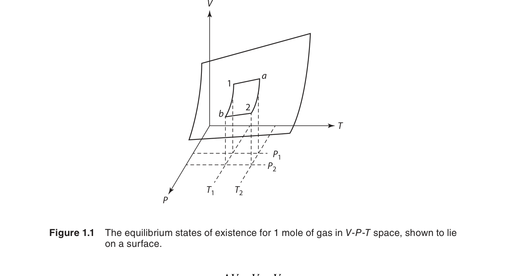
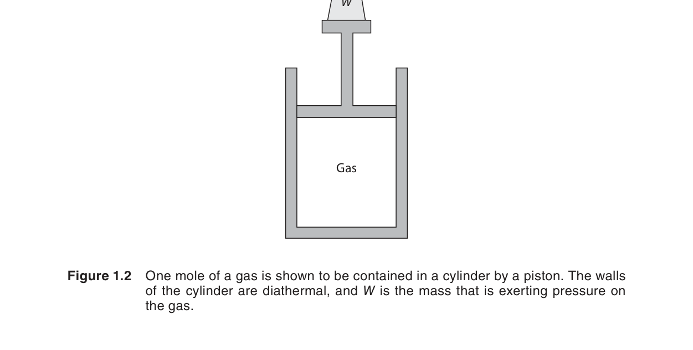
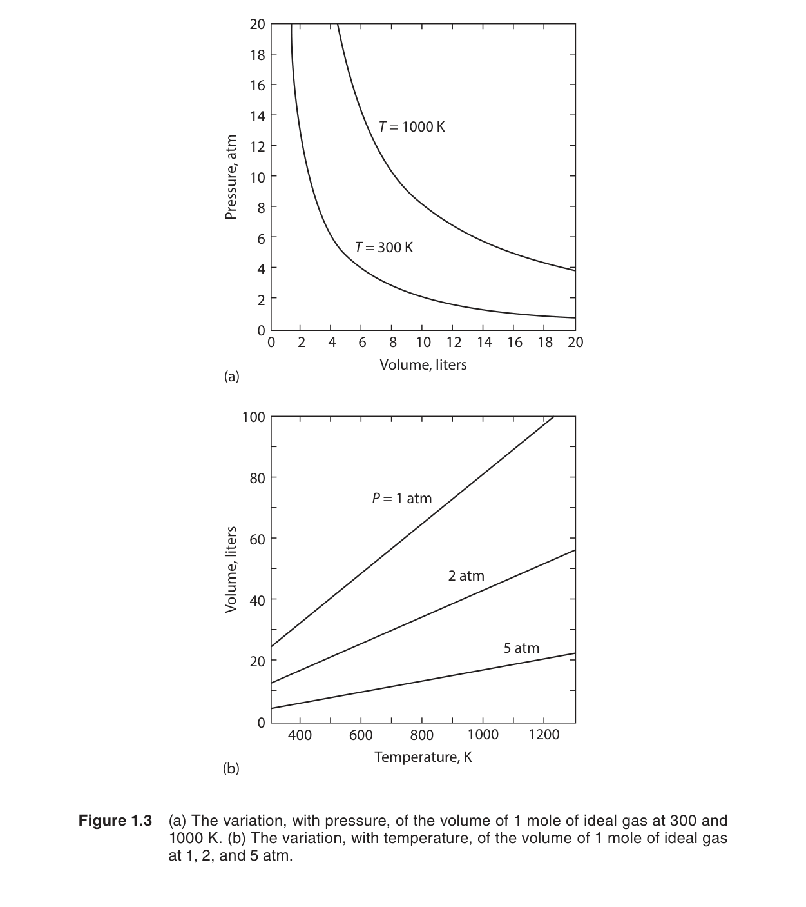
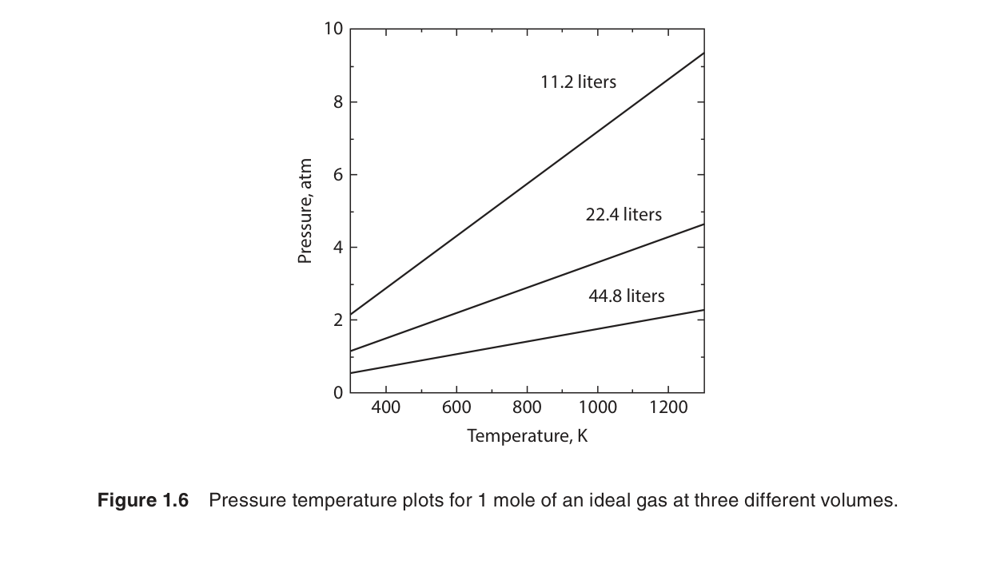
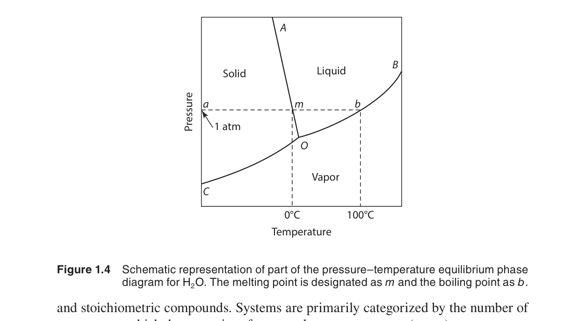
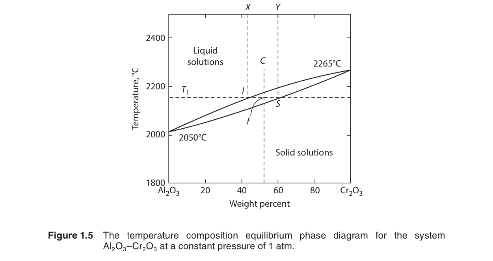

導論與術語定義
熱力學是材料科學的語言。無論是預測相變化、計算化學反應的可行性、還是設計熱處理製程，熱力學提供了統一的理論框架。本章建立熱力學的基本詞彙——狀態、平衡、狀態方程式、廣延量與強度量——這些概念將貫穿全書。
在本章中，我們將學習：
- 熱力學「狀態」的定義——用少數宏觀變數描述系統
- 熱平衡、力學平衡、化學平衡的條件
- 理想氣體狀態方程式 $PV = nRT$ 及其應用
- 廣延量（extensive）與強度量（intensive）的區別
- 單成分系統的 $P$–$T$ 相圖與相律
- 熱力學四大定律的概述
🧭 本章推理地圖
- 已知條件：用狀態變數描述系統，並確認是否接近平衡（§1.2、§1.3）。
- 中間機制：狀態方程式、廣延量/強度量與相律提供變數之間的限制關係（§1.4–§1.7）。
- 可預測結果：判斷相存在區域、自由度數、循環中狀態函數與路徑函數的差異（§1.6–§1.9）。
- 工程用途：為後續能量平衡、相圖判讀與反應平衡計算建立共同語言（Ch2、Ch7、Ch11）。
1.1 導論（Introduction）
熱力學（thermodynamics）源自希臘文 therme（熱）和 dynamis（力），最初研究熱與機械功之間的轉換關係。現代的熱力學遠不止於此——它是描述能量轉換和物質平衡的普適理論，廣泛應用於材料科學、冶金、化學工程、甚至生物學。
在材料科學中，熱力學幫助我們回答以下問題：
- 給定溫度和壓力下，材料會處於什麼相？（固相、液相、氣相？）
- 兩種金屬混合後會形成固溶體還是金屬間化合物？
- 一個化學反應是否自發進行？平衡產率是多少？
- 需要多少能量來將礦石還原為金屬？
📝 自編概念例：判斷熱力學能回答的問題
題目：「某氧化物在高溫下是否容易被碳還原」與「還原需要多久完成」哪一個更適合先用熱力學分析？
解：前者可由自由能與平衡常數判斷，是熱力學問題；後者涉及反應速率、傳質與界面反應，是動力學問題。
物理意義：熱力學先回答「能不能、到哪裡」，動力學再回答「多快」。
1.2 狀態的概念（The Concept of State）
熱力學中，一個系統的狀態（state）由一組宏觀可測量的變數來定義。當這些變數的值被指定後，系統的所有其他性質就被完全確定——這就是狀態的概念。
對於一個簡單可壓縮系統（如單成分氣體），只需要兩個獨立的狀態變數就能完全定義其狀態。例如，指定了理想氣體的溫度和壓力，其體積就被 $V = nRT/P$ 唯一確定。

📝 自編概念例：狀態函數與路徑函數
題目：同一理想氣體從狀態 A 到狀態 B，若走兩條不同路徑，內能變化與作功是否必然相同？
解：內能是狀態函數，只由 A、B 決定，因此兩路徑的 $\Delta U$ 相同；功是路徑函數，會隨過程路徑不同而改變。
物理意義：先分清「狀態量」與「過程量」，後續第一定律才不會混淆。
1.2a 晶體結構基礎（Crystal Structure Basics）
雖然熱力學不直接依賴微觀結構，但理解材料的晶體結構對於解釋熱力學性質（如比熱、熵、相穩定性）至關重要。晶體結構的對稱性與原子堆積方式決定了材料的鍵結能、振動頻譜和缺陷形成能——這些都是影響熱力學性質的微觀因素。本章介紹幾種基本的晶體結構分類與幾何參數，為後續章節的熱力學分析提供結構背景。
固體的分類
根據原子排列的有序程度，固體可分為三大類：
- 單晶體（Single Crystal）：原子在三維空間中呈現週期性排列，整個晶體具有長程有序（long-range order）。單晶體的宏觀性質通常是各向異性的（anisotropic），即不同晶向上的物理性質不同。
- 多晶體（Polycrystalline）：由許多小單晶（晶粒，grain）組成，晶粒之間由晶界（grain boundary）分隔。每個晶粒內部是週期性的，但不同晶粒的取向不同。多晶體的宏觀性質通常是各向同性的（isotropic）。
- 非晶體（Amorphous）：原子排列缺乏長程有序，僅在短距離內有局域有序（short-range order），如玻璃。非晶體的熵高於對應的晶體，因為原子排列的混亂度更高。
二維點陣的週期性
理解三維晶體結構的基礎是二維點陣（lattice）的概念。一個二維點陣由一組基向量（basis vectors）$\mathbf{a}_1$ 和 $\mathbf{a}_2$ 定義，任意點陣點的位置可由 $\mathbf{R} = n_1\mathbf{a}_1 + n_2\mathbf{a}_2$ 表示，其中 $n_1, n_2$ 為整數。這種週期性結構是晶體的最基本特徵。
點陣（lattice）與基元（basis）的區別至關重要：點陣 + 基元 = 晶體結構。點陣描述了空間排列的週期性，而基元是附著在每個點陣點上的原子或分子集合。例如，NaCl 結構可以看作 fcc 點陣加上 Na⁺ 和 Cl⁻ 離子組成的基元。
單位晶胞的選擇
同一個點陣可以用不同的方式劃分單位晶胞（unit cell）。例如，二維點陣中可選擇平行四邊形、矩形或菱形作為重複單元。習慣上選擇具有最高對稱性且體積最小的晶胞作為慣用晶胞（conventional cell）。在三維中，慣用晶胞通常比原始晶胞（primitive cell）大，但更能直觀反映晶體的對稱性。
三種基本立方晶體結構
材料科學中最常見的晶體結構包括以下三種基本立方結構。下表總結了它們的關鍵幾何參數：
| 結構 | 符號 | 原子數/晶胞 | 配位數 | 最近鄰距離 |
|---|---|---|---|---|
| 簡單立方（sc） | cP | 1 | 6 | $a$ |
| 體心立方（bcc） | cI | 2 | 8 | $\sqrt{3}a/2$ |
| 面心立方（fcc） | cF | 4 | 12 | $a/\sqrt{2}$ |
配位數（coordination number）是每個原子最近鄰原子的數目。配位數越高，原子堆積越緊密，通常鍵合能越高、熔點越高。例如，fcc 的配位數為 12，意味著每個原子有 12 個最近鄰——這是密集堆積結構的特徵。
🔍 推導 1：體密度（Volume Density）——單位體積內的原子數
🔍 推導 2：原子堆積因子（Atomic Packing Factor, APF）——sc、bcc、fcc 的堆積效率
🔍 推導 3：米勒指數（Miller Indices）——從截距推導晶面指數
- 表面熱力學：不同晶面的表面張力（surface tension）不同，影響晶體形貌和異質成核速率。
- 第七章（相圖）：固態相變中，新相的慣習面（habit plane）通常對應特定的晶面指數。
- 第九章（擴散）：擴散係數在立方晶系中是各向同性的，但在非立方晶系（如六方）中與晶面指數有關。
- 差排與滑移：晶體塑性變形發生在特定的滑移面上（如 fcc 的 {111} 面），這直接影響材料的力學性質與熱力學穩定性。
補充例題：晶面間距計算
立方晶系中，相鄰平行晶面 $(h\ k\ l)$ 之間的距離 $d_{hkl}$ 可由下式計算：
這個公式在 X 射線繞射（XRD）分析中至關重要——布拉格定律 $n\lambda = 2d\sin\theta$ 利用 $d_{hkl}$ 來確定晶體結構和晶格常數。例如，對於銅（fcc, $a = 3.615\ \text{Å}$），$(111)$ 面的間距為 $d_{111} = 3.615 / \sqrt{3} = 2.087\ \text{Å}$。
📝 自編概念例：由米勒指數比較晶面間距
題目：同一立方晶體中，$(100)$ 與 $(111)$ 哪一組晶面間距較大？
解：由 $d_{hkl}=a/\sqrt{h^2+k^2+l^2}$，$d_{100}=a$，$d_{111}=a/\sqrt{3}$，所以 $(100)$ 間距較大。
物理意義：米勒指數越大通常代表晶面族越密，面間距越小。
1.3 平衡的範例（Example of Equilibrium）
一個系統處於熱力學平衡（thermodynamic equilibrium）時，必須同時滿足三種平衡：
- 熱平衡（Thermal equilibrium）：系統內部各處溫度均勻，且與環境溫度相同——沒有熱流。
- 力學平衡（Mechanical equilibrium）：系統內部各處壓力均勻，且與環境壓力平衡——沒有淨力。
- 化學平衡（Chemical equilibrium）：系統內部沒有淨化學反應發生，各相的化學位（chemical potential）均勻。

本章以氣缸–活塞系統為例，說明力學平衡與熱平衡的交互關係。當氣體被活塞壓縮時，若過程夠慢（準靜態），系統在每一步都近似處於平衡，這就是可逆過程的理想化模型。
📝 自編概念例：判斷是否接近平衡
題目：活塞快速壓縮氣體時，能否把每一瞬間都視為平衡狀態？
解：通常不行。快速壓縮會造成壓力與溫度分布不均，系統內部尚未完成鬆弛，不能用單一 $P$、$T$ 描述整個系統。
物理意義：準靜態是熱力學分析的理想化條件，代表過程足夠慢、系統能連續接近平衡。
1.4 理想氣體狀態方程式（The Equation of State of an Ideal Gas）
狀態方程式（equation of state）是聯繫狀態變數之間的數學關係。最簡單也最重要的狀態方程式是理想氣體定律：
其中 $R = 8.3144\ \text{J/mol·K}$ 是通用氣體常數（universal gas constant）。這個方程式描述了低壓下真實氣體的行為——壓力越低，真實氣體越接近理想行為。

理想氣體定律基於兩個假設：(1) 氣體分子本身佔據的體積可忽略不計；(2) 分子之間沒有交互作用力（除了彈性碰撞瞬間）。在高壓或低溫下，這兩個假設不再成立——真實氣體需要用更複雜的狀態方程式（如 van der Waals 方程式，第八章）。
在標準溫度和壓力（STP：0°C、1 atm）下，1 莫耳理想氣體的體積為 22.414 升。這是一個常用的參考值。

📝 自編概念例：由理想氣體式判斷體積變化
題目：固定 $n$ 與 $T$ 時，若壓力加倍，理想氣體體積如何改變？
解：由 $PV=nRT$，在 $n$、$T$ 固定時，$P$ 與 $V$ 成反比；壓力加倍，體積變為原來的一半。
物理意義：這是狀態方程式把不同狀態變數連在一起的最直接例子。
1.5 能量與功的單位（The Units of Energy and Work）
在材料熱力學中，能量的主要單位是焦耳（Joule, J）：
另一常見的能量單位是卡路里（calorie），定義為將 1 克水從 14.5°C 加熱到 15.5°C 所需的熱量。與焦耳的換算關係：
功（work）的定義為力乘以位移。在熱力學中，最常見的功是壓力–體積功（$P$–$V$ work）——系統對抗外壓膨脹所做的功：
📝 自編概念例：能量單位換算
題目：若某過程吸收 $10.0$ cal 熱量，等於多少 J？
解：使用 $1\ \text{cal}=4.184\ \text{J}$，得到 $10.0\ \text{cal}=41.84\ \text{J}$。
物理意義：熱量、功與內能都用能量單位表示，混用單位會直接造成第一定律計算錯誤。
1.6 廣延量與強度量（Extensive and Intensive Thermodynamic Variables）
熱力學變數分為兩類：
| 類型 | 定義 | 範例 |
|---|---|---|
| 廣延量（Extensive） | 與系統大小成正比 | 體積 $V$、質量 $m$、內能 $U$、焓 $H$、熵 $S$ |
| 強度量（Intensive） | 與系統大小無關 | 溫度 $T$、壓力 $P$、密度 $\rho$、莫耳體積 $V/n$ |
一個簡單的判斷法則：將系統均分為兩半：廣延量減半，強度量不變。
莫耳量（molar quantity）是廣延量除以莫耳數，因此轉化為強度量。例如莫耳體積 $v = V/n$、莫耳內能 $u = U/n$。在材料熱力學中，我們大量使用莫耳量，因為它們便於比較不同大小的系統。
更多實例說明
為了加深理解，考慮一個具體的數值範例：將 2 莫耳的理想氣體（$n = 2$）置於 300 K、1 atm 下，計算其體積：
- 體積 $V$ 是廣延量——如果氣體的量減半為 1 莫耳（保持 $T$ 和 $P$ 不變），體積也減半為 24.62 L。
- 溫度 $T = 300$ K 和壓力 $P = 1$ atm 是強度量——無論系統大小，只要處於平衡，這些值保持不變。
- 密度 $\rho = m/V$ 是強度量：1 莫耳與 2 莫耳的理想氣體在相同 $T$ 和 $P$ 下密度完全相同。
- 莫耳體積 $v = V/n$ 是強度量：在給定的 $T$ 和 $P$ 下，$v$ 是常數（$v = RT/P = 24.62\ \text{L/mol}$），與氣體總量無關。
廣延量與強度量的區分在熱力學中至關重要，因為狀態函數的微分關係——特別是 Maxwell 關係——建立在這個區分之上。當對一個熱力學勢（如內能 $U$）求全微分時，廣延量是自然變數：$dU = TdS - PdV$，其中熵 $S$ 和體積 $V$ 都是廣延量。如果希望將變數切換為強度量（如 $T$ 和 $P$），就需要透過 Legendre 變換引入新的熱力學勢（如吉布斯自由能 $G = U - TS + PV$）。這個核心技巧將在第五章（Maxwell 關係與熱力學勢）中系統介紹。
偏莫耳量（Partial Molar Quantities）
在多成分系統中，一個重要的概念延伸是偏莫耳量——在固定 $T$、$P$ 和其他成分的條件下，一個廣延量對某一成分莫耳數的偏導數。以吉布斯自由能 $G$ 為例，定義偏莫耳吉布斯自由能——即化學位（chemical potential） $\mu_i$：
化學位是強度量，是決定相平衡和化學平衡的核心變數。它告訴我們：如果向系統中加入極微量的成分 $i$，系統的吉布斯自由能會變化多少。當各相中同一成分的化學位相等時，系統達到相平衡。這個概念將在第十章（多元系統熱力學）中詳細展開，屆時我們將推導 Gibbs–Duhem 方程式和二元相圖的熱力學基礎。
廣延量判別表
| 物理量 | 符號 | 類型 | 判斷理由 |
|---|---|---|---|
| 質量 | $m$ | 廣延 | 系統加倍，質量加倍 |
| 體積 | $V$ | 廣延 | 系統加倍，體積加倍 |
| 內能 | $U$ | 廣延 | 系統加倍，內能加倍 |
| 熵 | $S$ | 廣延 | 系統加倍，熵加倍 |
| 溫度 | $T$ | 強度 | 與系統大小無關 |
| 壓力 | $P$ | 強度 | 與系統大小無關 |
| 密度 | $\rho$ | 強度 | 廣延量之比 $m/V$ |
| 莫耳體積 | $v$ | 強度 | 廣延量之比 $V/n$ |
| 化學位 | $\mu$ | 強度 | 偏導數，與系統大小無關 |
📝 自編概念例：判斷廣延量與強度量
題目：把一杯水分成兩半，總體積、溫度與莫耳體積如何分類？
解：總體積隨系統大小減半，是廣延量；溫度不因分割而改變，是強度量；莫耳體積是體積除以莫耳數，也不隨系統大小改變，是強度量。
物理意義：分割系統是判斷廣延量與強度量的快速測試。
1.7 平衡相圖與熱力學成分（Equilibrium Phase Diagrams and Thermodynamic Components）
相（phase）是系統中物理和化學性質均勻的區域。例如冰水混合物有兩個相（固相和液相），雖然化學成分相同（都是 H₂O）。
成分（component）是獨立可變化學物種的最小數目，足以描述系統中所有相的組成。對於純水系統，成分數 $C = 1$（只需要 H₂O 就能描述所有相）。
單成分系統的壓力–溫度相圖（$P$–$T$ diagram）展示了不同相在什麼溫度和壓力下穩定存在。三條曲線（固–氣、固–液、液–氣）將圖分成三個區域，三條曲線交於三相點（triple point）——這是唯一固、液、氣三相共存的溫度和壓力。


三相點的深入分析
以水為例，三相點（$T = 273.16$ K, $P = 611.73$ Pa ≈ 0.00604 atm）是唯一固、液、氣三相共存的狀態。根據相律 $F = 1 - 3 + 2 = 0$，這個點沒有任何自由度——壓力和溫度完全鎖定，無法改變其中一個而不破壞三相共存。
三相點與熔點（melting point）不同：
- 三相點是固、液、氣三相平衡的獨特狀態（$F = 0$）。
- 熔點指 1 atm 下固–液兩相平衡的溫度（$F = 1$——沿固–液平衡線移動）。
- 對於水，熔點約為 273.15 K（0°C），與三相點溫度（273.16 K）相差僅 0.01 K。這 0.01 K 的差異源自壓力對固–液平衡的微小影響（水的固–液線斜率為負值）。
相律的直觀理解
相律 $F = C - P + 2$ 中的「2」代表兩個外部變數——溫度和壓力。在單成分系統中：
- 單相區（$P = 1$）：$F = 1 - 1 + 2 = 2$——可以在一定範圍內自由改變 $T$ 和 $P$ 而不產生新相。例如，在液相區內，我們可以同時升高溫度和降低壓力，系統仍保持為液相。
- 兩相線（$P = 2$）：$F = 1 - 2 + 2 = 1$——只有一個自由度。若改變溫度，壓力必須沿相平衡曲線（Clausius–Clapeyron 關係）相應變化才能維持兩相共存。
- 三相點（$P = 3$）：$F = 1 - 3 + 2 = 0$——唯一確定的 $T$–$P$ 組合。
相律的威力在於：它不需要任何具體的物質信息，僅憑相數和成分數就能預測系統的自由度數——這是熱力學普適性的最佳體現。
從單成分到多成分系統
相圖是材料熱力學的核心工具。單成分系統的 $P$–$T$ 相圖（圖 1.4）是理解更複雜系統的必要基礎：
- 在第七章（相圖熱力學）中，我們將推導相邊界斜率的 Clausius–Clapeyron 方程式：$\displaystyle\frac{dP}{dT} = \frac{\Delta S}{\Delta V}$，並討論如何從熱力學數據（如熔化焓和體積變化）構建完整的相圖。
- 在第十章（二元相圖）中，相律推廣為 $F = C - P + 2$（其中 $C$ 為成分數），二元系統（$C = 2$）的相圖引入了成分作為第三個軸，衍生出共晶、包晶、共析等豐富的相平衡類型。
- 固–固相變：除了固–液–氣相變，許多材料還存在固–固相變（如鐵在 912°C 從 bcc 轉變為 fcc、在 1394°C 從 fcc 轉變回 bcc）。這些同素異構轉變（allotropic transformation）在材料熱處理中至關重要。
📝 自編概念例：單成分三相點自由度
題目：單成分系統在固、液、氣三相共存時，自由度是多少？
解：由 Gibbs 相律 $F=C-P+2$，代入 $C=1$、$P=3$，得到 $F=0$。
物理意義：三相點的溫度與壓力不能任意改變，因此可作為穩定的參考狀態。
1.8 熱力學定律概述（Laws of Thermodynamics）
熱力學建立在四個基本定律之上。本章僅做概述，後續章節將深入展開：
| 定律 | 核心陳述 | 展開章節 |
|---|---|---|
| 第零定律 | 若 A 與 B 熱平衡，B 與 C 熱平衡，則 A 與 C 熱平衡——這定義了溫度的概念。 | 本章 |
| 第一定律 | 能量守恆：$\Delta U = q + w$（內能變化 = 輸入熱 + 輸入功） | 第二章 |
| 第二定律 | 熵增原理：孤立系統的自發過程總是朝熵增加的方向進行。 | 第三章 |
| 第三定律 | 絕對零度時，完美晶體的熵為零：$S(0\ \text{K}) = 0$。 | 第六章 |
這四個定律共同構成了熱力學的邏輯骨架。第一定律告訴我們什麼過程是可能的（能量必須守恆）；第二定律告訴我們可能的過程中哪些是自發的（熵必須增加）。
歷史發展背景
熱力學定律的發展歷程是科學史上最精彩的故事之一，每一位參與者都留下了不可磨滅的印記：
- 第零定律雖然在邏輯上是最基本的（它定義了溫度），但在歷史上是最晚被正式命名的——1930 年代科學家們才意識到需要一個單獨的定律來為「溫度」這個概念提供操作型定義。在此之前，人們憑直覺使用溫度，但沒有認識到溫度可比性需要一個公理基礎。
- 第一定律的奠基來自 James Joule（焦耳）在 1840–1850 年代的一系列精巧實驗。他在不同形式的實驗中（摩擦生熱、電流通過電阻、氣體壓縮）反覆測量了熱和功的轉換比率，最終確定 $1\ \text{cal} = 4.184\ \text{J}$。這個看似簡單的數字是能量守恆定律的實驗基石。
- 第二定律由 Sadi Carnot（卡諾，1824）、Rudolf Clausius（克勞修斯，1850）和 Lord Kelvin（開爾文，1851）共同建立。Carnot 發現了熱機效率的上限與工作物質無關，僅取決於熱源和冷源的溫度。Clausius 則引入了「熵」這個概念——他創造了這個詞（源自希臘文「轉變」），並給出了數學表達 $\oint \frac{dq_{\text{rev}}}{T} = 0$。
- 第三定律由 Walther Nernst（能斯特，1906）基於低溫實驗提出。它為計算絕對熵值提供了基準：$S(0\ \text{K}) = 0$ 對於完美晶體。這個看似簡單的陳述在低溫物理和化學平衡計算中有深遠的影響。
定量範例：第一定律的簡單應用
考慮 1 莫耳理想氣體在 300 K 下等溫膨脹，從 $V_1 = 10$ L 到 $V_2 = 20$ L。比較兩種不同的路徑：
路徑 A：對抗恆外壓 $P_{\text{ext}} = 1$ atm 的不可逆膨脹
將單位轉換為焦耳：$10\ \text{L·atm} \times 101.325\ \text{J/L·atm} = -1013\ \text{J}$。由於理想氣體等溫過程 $\Delta U = 0$，因此 $q_A = -w_A = +1013\ \text{J}$。系統從環境吸收了 1013 J 的熱量，並對環境做了 1013 J 的功。
路徑 B：可逆等溫膨脹
在可逆過程中，外壓始終等於系統壓力：$P_{\text{ext}} = P = nRT/V$。
同樣 $\Delta U = 0$，因此 $q_B = -w_B = +1729\ \text{J}$。
對比兩個路徑：
- 兩條路徑的 $\Delta U$ 均為 0（狀態函數，與路徑無關）——驗證了狀態函數的核心特徵。
- 但 $w$ 和 $q$ 的值完全不同（分別為 -1013 J vs -1729 J，以及 +1013 J vs +1729 J）——功和熱是路徑函數。
- 可逆過程做的功更多（|$w_B$| > |$w_A$|），這是可逆過程效率最高的體現。在 $P$–$V$ 圖上，可逆膨脹曲線下的面積（功）大於恆外壓直線下的面積。
這些計算將在第二章（熱力學第一定律）中系統學習，並推廣到等容、等壓、絕熱和多方過程。
熱力學定律的適用範圍
值得注意的是，經典熱力學只適用於宏觀系統——包含大量粒子的集合。對於少數粒子組成的微觀系統（如幾個原子），熱力學定律的統計本質會導致明顯的漲落。此外，熱力學第二定律是一個統計定律——雖然自發過程總是朝熵增加的方向進行，但微觀尺度上存在暫時的熵減波動（漲落定理）。這些邊界條件在第四章（統計熱力學入門）中會有更深層次的討論。
📝 自編概念例：選擇適用的熱力學定律
題目：若要判斷一個孤立系統中某過程是否可自發進行，應優先使用哪一個定律？
解：應使用第二定律，因為孤立系統自發過程的方向由熵增加判斷。
物理意義：第一定律只限制能量守恆，不能單獨判斷過程方向。
1.9 例題與應用（Example Problem）
本章結尾我們通過一個典型例題來鞏固所學概念。這個例題結合了狀態方程式、廣延量與強度量的應用，以及熱力學第一定律的初步計算。
例題：理想氣體的循環過程
設有 2 莫耳理想氣體進行一個由三個步驟組成的循環：
- 步驟 1 → 2（等壓膨脹）：氣體在 $P_1 = 2$ atm 下從 $V_1 = 25$ L 膨脹到 $V_2 = 50$ L。
- 步驟 2 → 3（等容降壓）：體積固定在 $V_2 = 50$ L，壓力下降到 $P_3 = 1$ atm。
- 步驟 3 → 1（等溫壓縮）：在 $T_3 = T_1$ 下壓縮回到初始狀態。
解題步驟
第一步：先確定初始溫度 $T_1$。使用理想氣體定律：
第二步：步驟 1→2 等壓膨脹中，$T_2 = (V_2/V_1) \times T_1 = (50/25) \times 304.7 = 609.4$ K。
第三步：步驟 2→3 等容降壓中，$T_3 = (P_3/P_2) \times T_2 = (1/2) \times 609.4 = 304.7$ K（確實回到初始溫度）。
第四步：根據第一定律計算各步驟的 $\Delta U$、$w$ 和 $q$。每個步驟的具體計算將在第二章中完成。關鍵觀察：經過一個循環回到初始狀態後，$\Delta U_{\text{cycle}} = 0$——因為內能是狀態函數，循環變化為零。若把循環畫在 $P$–$V$ 圖上，總功 $w_{\text{cycle}}$ 等於循環曲線所圍的面積；這裡先強調概念，定量作圖留到第二章。
📝 自編概念例：循環中的狀態函數
題目：一個系統完成循環後回到原狀態，$\Delta U_{\text{cycle}}$ 是否必為零？總功是否也必為零？
解：$\Delta U_{\text{cycle}}=0$，因為內能是狀態函數；總功不一定為零，因為功取決於路徑。
物理意義：熱機能在循環中輸出淨功，正是因為功與熱不是狀態函數。
熟練掌握本章的基本概念（狀態、平衡、狀態方程式、廣延量與強度量）是學習後續所有章節的必要前提。從第二章開始，我們將正式進入熱力學第一定律的系統學習。
初學者常見錯誤
自我檢測
1. 為什麼同一初末狀態的功可能不同？
功是路徑函數，不只由初末狀態決定。若氣體以恆外壓膨脹或可逆等溫膨脹，$P$–$V$ 圖下面積不同，作功也不同。
正文依據：§1.2、§1.9
2. 單成分三相共存時還能任意調整溫度嗎？
不能。由 Gibbs 相律 $F=C-P+2$，單成分三相共存時 $F=1-3+2=0$，溫度與壓力都被固定。
正文依據：§1.7
3. 把系統分成兩半後，哪些量會改變？
廣延量如總體積、總質量、總內能會隨系統大小改變；強度量如溫度、壓力、密度與莫耳體積不因分割而改變。
正文依據：§1.6
延伸資源與下一章
本章摘要
- 狀態與狀態函數：系統的狀態由少數宏觀變數定義。狀態函數（$U$, $H$, $S$, $G$）只取決於當前狀態，與路徑無關。
- 平衡：熱力學平衡需要同時滿足熱平衡、力學平衡、化學平衡。平衡是動態的，微觀過程仍在進行。
- 理想氣體定律：$PV = nRT$（或 $Pv = RT$）。$R = 8.3144\ \text{J/mol·K}$。
- 廣延量 vs 強度量：廣延量與系統大小成正比，強度量與系統大小無關。莫耳量是強度量。
- 相圖與相律：$F = C - P + 2$。單成分系統的 $P$–$T$ 圖有三個單相區、三條兩相線、一個三相點。
- 四大定律：第零定律定義溫度，第一定律表述能量守恆，第二定律表述熵增，第三定律定義熵的絕對零點。
| 概念／公式 | 符號或關係 | 適用條件 | 用途 |
|---|---|---|---|
| 理想氣體狀態方程式 | $PV=nRT$ | 低壓、遠離凝結的氣體 | 由兩個狀態變數推算第三個變數 |
| 壓力–體積功 | $w=\int P_{\text{ext}}\,dV$ | 體積改變且邊界受外壓作用 | 計算膨脹或壓縮過程的能量交換 |
| Gibbs 相律 | $F=C-P+2$ | 平衡系統 | 判斷可獨立調整的變數數目 |
| 狀態函數 | $U,H,S,G$ | 狀態明確、接近平衡 | 比較不同狀態而不依賴過程路徑 |